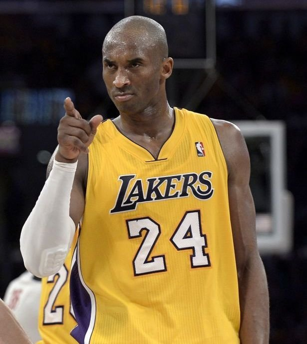
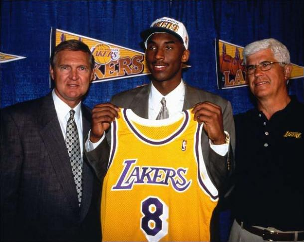
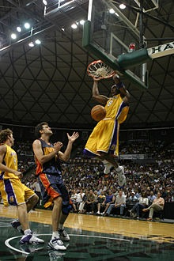
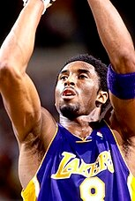
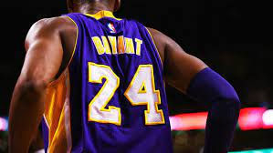
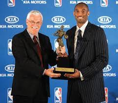
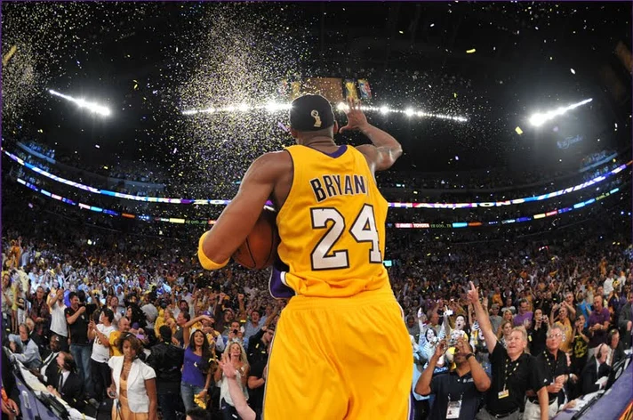

Historia
Kobe Bean Bryant (Filadélfia, 23 de agosto de 1978 — Calabasas, 26 de janeiro de 2020)[1] foi um jogador profissional de basquetebol estadunidense. Jogou toda sua carreira como ala-armador no Los Angeles Lakers da National Basketball Association (NBA). Filho de Joe Bryant, ex-jogador do Philadelphia 76ers e antigo técnico do time Los Angeles Sparks da WNBA, é considerado um dos maiores jogadores de todos os tempos.[2][3][4][5] Por outro lado, críticos alegam suas baixas porcentagens de arremessos de campo, de dois e três pontos (ao longo de sua carreira, teve média de 44% em arremessos de dois e 32% em triplos, que até caem nos playoffs), que fazem dele o jogador com mais arremessos perdidos na história da NBA: 14 481 arremessos de campo perdidos na temporada regular (marcou 11 719 de um total de 26 200 arremessos) e 2 485 (marcou 2 014 dum total de 4 499 arremessos nos playoffs), totalizando 16 966 arremessos perdidos.[6] Foi um dos poucos atletas a ser escolhido no recrutamento da NBA direto do ensino médio para a liga norte-americana. Ao longo de 20 anos de carreira, ganhou cinco campeonatos da NBA, participou 18 vezes do All-Star Game (recorde absoluto), foi eleito 15 vezes como membro da Equipe ideal da NBA, 12 vezes como membro da All-Defensive Team da NBA e foi o Jogador Mais Valioso (MVP) da NBA em 2008. Kobe, junto com o pivô Shaquille O'Neal e o técnico Phil Jackson, levou os Lakers a três campeonatos consecutivos da NBA, a chamada dinastia’ nos Estados Unidos – 2000, 2001 e 2002. Após a temporada 2003–04, Shaquille O'Neal saiu do time e Kobe tornou-se a estrela principal do time de Los Angeles, sendo o cestinha da liga por duas temporadas consecutivas: 2005–06 e 2006–07. Nessas temporadas, quebrou vários recordes pessoais e da liga. Em 2006, fez 81 pontos num jogo contra o Toronto Raptors, segunda maior pontuação de todos os tempos, atrás somente dos 100 pontos de Wilt Chamberlain, marcados numa partida em 1962. Contudo, há analistas da NBA que defendem que o desempenho de Kobe foi melhor.[7][8] Em 2003, envolveu-se num escândalo sexual no estado do Colorado, quando uma funcionária do hotel em que estava hospedado o acusou de estupro. Kobe admitiu que adulterara, mas que não havia cometido o crime. Em setembro de 2004, o processo foi retirado. Kobe foi escolhido pela primeira vez como titular no Jogos das Estrelas da NBA em sua segunda temporada da carreira. Desde então, foi titular em mais 17 ocasiões, um recorde absoluto. Em 2010 ele foi convocado para ser titular, mas uma contusão o impediu de participar do evento. Foi MVP do All-Star Game em quatro ocasiões: 2002, 2007, 2009 e 2011, o que também lhe confere um recorde, empatado com Bob Pettit. Kobe Bryant fazendo uma enterrada, em 2005 Foi o Jogador Mais Valioso da Liga (MVP),[9] na temporada 2007–08, após ter liderado seu time à melhor campanha na conferência Oeste, uma das mais difíceis dos últimos tempos[10] e levou o time às Finais da NBA, mas não ao título, que ficou na mão do maior rival dos Lakers, o Boston Celtics. No mesmo ano, foi medalha de ouro nas Olimpíadas de Pequim. Em 2009, Bryant levou os Lakers ao título da NBA e, assim, conquistou o seu quarto campeonato na carreira. Foi também o Jogador Mais Valioso das Finais, que ocorreram contra o Orlando Magic. Nesse ano, o uniforme de Kobe foi o mais vendido nos Estados Unidos, Europa e China. Ainda em 2009, o rapper Lil Wayne homenageou Kobe com uma música com o próprio nome de Bryant. No ano seguinte, numa partida contra o Memphis Grizzlies, tornou-se o maior pontuador da história do Los Angeles Lakers. Ainda em 2010, comandou os Lakers a mais um título da NBA ao bater em sete jogos os Celtics. Foi a primeira vez que disputou um jogo 7 das Finais da NBA. E pela segunda vez na carreira, foi escolhido como o Jogador Mais Valioso das Finais. Em 2018, Bryant venceu o prêmio Óscar de "Melhor curta-metragem de animação" pelo filme Dear Basketball.[11] Kobe faleceu, aos 41 anos, em 26 de janeiro de 2020 quando o helicóptero em que estava caiu na cidade de Calabasas, nas cercanias do Condado de Los Angeles.
O começo de carreira (1996 a 1999)
Na primeira temporada, Kobe teve minutos contados em quadra. Vindo do banco para completar os minutos dos armadores Eddie Jones e Nick van Exel, teve direito a apenas quinze minutos por jogo e uma média de 7,6 pontos por jogo.[17] Mesmo assim, foi o jogador mais jovem da história a pisar em quadra por um time da NBA e a começar um jogo em quadra (só seria superado anos depois pelo pivô Andrew Bynum). Aquela época, já era reconhecido pela torcida, por sua incrível habilidade e, sobretudo, a forma que enterrava. Assim, foi o vencedor do concurso de enterradas de 1997. Como esperado, evoluiu na sua segunda temporada. Teve mais tempo em quadra e pontuou mais: passou de 7,6 pontos por jogos, para 15,4. Seu bom jogo fez com que ele se tornasse o mais jovem jogador a participar do All-Star Game, o que fez com que, pela primeira vez desde 1983, chamassem-se 4 jogadores dum mesmo time a participar do jogo das estrelas (além de Bryant, também convocaram-se o pivô Shaquille O'Neal e os armadores Eddie Jones e Nick Van Exel). Nessa mesma temporada, Kobe quase venceu o prêmio de melhor sexto-homem da NBA, ficando em segundo lugar,[18] apesar de ter sido o maior pontuador da NBA entre os não-titulares.[19] Em sua terceira temporada, teve tudo que precisava: continuou evoluindo e não tinha mais tanta concorrência, pois, Eddie Jones e Nick Van Exel foram trocados. A temporada de 1998–99 foi curta devido a um período de greve dos jogadores da NBA, mas Kobe foi titular em todos os 50 jogos realizados. Nessa época também começaram comparações que durariam por muito tempo: Kobe já era comparado a Michael Jordan[20] e Magic Johnson.[21] O time foi aos playoffs da temporada, mas foram varridos pelo San Antonio Spurs nas semifinais de conferência.
Estabelecendo uma dinastia (1999 a 2002)
Kobe perdeu o início da temporada 1999–2000 por uma lesão na mão que o deixou fora por 6 semanas. Ao voltar, ele se uniu a Shaq e ao então novo técnico Phil Jackson (que levou o Chicago Bulls, de Michael Jordan, ao hexacampeonato na NBA), e juntos lideraram o time de Los Angeles a melhor campanha da temporada regular com 67 vitórias e apenas 15 derrotas. Nos playoffs os californianos tiveram duas duras batalhas contra times do oeste. Primeiro contra o Sacramento Kings na primeira rodada e depois contra o Portland Trail Blazers de Scottie Pippen nas finais de conferência. Porem nas finais da NBA, os Lakers liderados por Shaquille O'Neal, ganharam do Indiana Pacers por 4 a 2 e Kobe enfim conquistou seu primeiro anel. Nas duas temporadas seguintes, Kobe, que já era um dos melhores jogadores da liga, continuou formando uma das melhores duplas da NBA com Shaq. Em ambas as temporadas o time de Los Angeles ficou entre os 3 primeiros de sua conferência e fez playoffs muito bons. Destaque para a temporada 2000–01 onde os Lakers só perderam um jogo na pós temporada.
O fim da dinastia
Kobe teve na temporada 2002–03 um dos melhores anos de sua vida. Ele anotou em média trinta pontos por jogo, além de distribuir seis assistências e pegar sete rebotes. Além disso, em fevereiro de 2003, ele teve um mês arrasador. Em nove partidas consecutivas anotou mais de quarenta pontos. Assim, ele conduziu o Lakers a uma campanha de cinqüenta vitórias na temporada regular. Tudo parecia caminhar para mais um título do Lakers, o quarto consecutivo e o décimo quinto da franquia, mas naquele ano Kobe e Shaq foram parados pelo time do San Antonio Spurs, de Tim Duncan e David Robinson, que conduziram o time dos Spurs ao título da NBA naquela temporada. Apesar dos três títulos juntos, muitos desentendimentos acabaram culminando na saída do astro Shaquille O'Neal para o Miami Heat.
O número da camisa
Sua camisa nos Lakers era a número 8, mas a partir da temporada 2006–07 passou a ser a 24. Alguns dizem que por causa do número de Michael Jordan ter sido o 23, outros dizem que foi apenas uma "volta no tempo" do astro, que já havia utilizado essa numeração anteriormente na High School. Mas o rumor mais forte é que a Nike, sua fornecedora de material esportivo teria pedido para ele mudar o número, já que a Adidas, que fornecia os equipamentos para Bryant anteriormente, ainda existem linhas de tênis que utilizam a marca Bryant número 8 do jogador.
MVP e mais dois anéis (2007 a 2010)
Após a saída de Shaq, as atenções de Los Angeles se voltaram para Kobe. O ala-armador liderou a equipe a três finais da NBA seguidas. Na temporada 2007–08 teve, provavelmente, seu melhor ano individualmente. Ganhou o MVP da temporada e liderou sua equipe às finais contra os Celtics. Porém, liderado por Paul Pierce e Kevin Garnett, o time de Boston venceu os Lakers em seis jogos. Nos dois anos seguintes Kobe, junto a seu escudeiro Pau Gasol, voltou às finais da NBA. A história foi bem diferente da temporada anterior. Em 2009 os Lakers venceram o Orlando Magic e no ano seguinte o Boston Celtics em duas finais épicas. Kobe ganhou o MVP das finais nas duas ocasiões (2009 e 2010).
Contusões, declínio e aposentadoria (2011 a 2016)
Nas olimpíadas de 2012, foi novamente campeão com a seleção dos EUA de basquete, que foi comparada ao 'Dream Team' de 92 e fez o maior número de pontos numa partida de basquete nas olimpíadas. Em fevereiro de 2013, perguntado sobre quem era o melhor jogador depois dele, Jordan respondeu: "5 é maior que 2", fazendo alusão aos 5 títulos que Kobe tem, contra apenas dois de LeBron. Kobe Bryant jogando pelos Lakers, em 2014 Em 31 de março de 2013, tornou-se o 4º maior cestinha da NBA e ultrapassou Wilt Chamberlain, fazendo 19 pontos sobre o Sacramento Kings. Em abril de 2013, sofreu a lesão mais grave de sua carreira. O jogador rompeu o tendão de Aquiles. A lesão acabou tirando o astro dos playoffs e consequentemente minando as chances dos Lakers de brigarem pelo título da temporada. Em 25 de novembro de 2013, assinou um contrato de $48,5 milhões, com duração de dois anos. Em 8 de dezembro de 2013, estreou na temporada depois de oito meses parado, contra o Toronto Raptors. Nove dias depois, conquistou sua melhor marca na temporada fazendo 21 pontos, porém, acabou fraturando o joelho. A expectativa inicial era que ele ficasse seis semanas parado, porém, foi anunciado no dia 12 de março de 2014, que ficaria fora da temporada 2013–14. Em 14 de dezembro de 2014, em meio a uma temporada de altos e baixos, conseguiu superar a marca que pertencia a Michael Jordan como o terceiro maior pontuador na história da NBA, com 32 293 a época (contra os 32 292 de Jordan).[22] Desde 2013, Kobe começou a sofrer com constantes contusões e queda de performance. Contudo, continuou jogando, apesar de críticas a respeito de sua persistência. Ao fim de 2015, seus números já eram alguns dos mais baixos da carreira. No dia 29 de novembro de 2015, em carta aberta, anunciou sua aposentadoria ao fim da temporada, em abril de 2016.[23] No dia 16 de janeiro de 2016, anunciou que não iria mais jogar pela Seleção, ficando de fora das Olimpíadas do Rio 2016. “ É hora de seguir em frente. Desde meu anúncio da aposentadoria, vejo esses caras diferentes. Eles são o futuro deste jogo. Esses são os caras que merecem estar no Rio. Estes são os caras que as pessoas precisam assistir. Esses são os caras para mostrar o futuro desse esporte. Já falei para o Jerry (Jerry Colangelo, presidente da Federação de Basquete dos EUA) e para o treinador da seleção que fisicamente não consigo fazer isso. Agora acho que é a vez dos mais jovens jogarem. Quero jogar minha última partida pelos Lakers. Jogar meu último jogo profissional pelos Lakers seria tão bonito quanto se fosse pelo meu país, já tive meu momento. ” Em fevereiro de 2016, Kobe jogou o Jogo das Estrelas da NBA (seu primeiro desde 2013). Ele teve dez pontos, seis rebotes e sete assistências.[25] Sua média de pontos na última temporada da carreira foi 28,62 pontos por jogo.[26] Em 13 de abril de 2016, jogou sua última partida na NBA contra o Utah Jazz, onde marcou 60 pontos (a melhor marca da temporada), na vitória dos Lakers por 101 a 96.[27] Bryant ainda quebrou um recorde em sua despedida; tornou-se o jogador mais velho a anotar pelo menos 50 pontos num jogo na NBA.[28] Após sua aposentadoria do basquete, Kobe continuou sua carreira como investidor e empresário, fundando sua própria marca de produtos esportivos, a Kobe Inc.[29]
